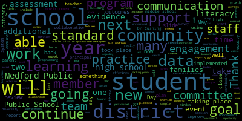
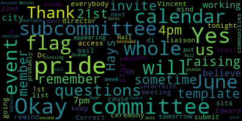
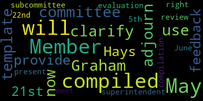
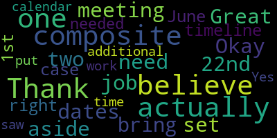

[Edouard-Vincent]: I look forward to presenting under this new format. So dear mayor longer current and members of the school committee, as the year winds down to a close, it is hard to believe that there are only six weeks of school left to this academic year. As I had the opportunity to gather data and reflect on this past year. There was so much to be proud of. And yet at the same time, during the most difficult times, there were many lessons learned from crises. I can say that looking back, I have grown both professionally and personally this school year. As I forge ahead, I am determined to stay focused on what is important and positive, our students and our staff. The Medford Public Schools, currently we are at an important crossroads and through thoughtful community and family collaboration, we will continue to improve and thrive as a district. I will provide a few brief highlights now, but I look forward to taking you on my journey with the Medford Public Schools this year. The Medford Public Schools continues to be an inclusive school district, rich in history and diversity, which offers so many educational opportunities for our students. We encourage our parents and caregivers to collaborate and to partner in their students' educational processes. My aces of achievement collaboration equity and support guide me in my duties daily. Additionally, social emotional learning continues to be a cornerstone of our district, along with responsive classroom and restorative practices. This year we work to hire additional guidance Councilors and social workers adjustment Councilors school psychologists, teachers and many more. We join the Sandy Hook promise to teach our students to start with hello, see something say something initiative, and new to us this year, we implemented the new say something anonymous reporting system. in an effort to empower everyone, students and staff to help create change and promote safer schools. We also implemented a 10 point action plan at Medford High School for safety, transparency, culture, climate and accountability, which did include the Sandy Hook promise, updating the handbook and implementing new hall and bathroom passes for students. Additionally, we offered viewings of screenagers presentations for our middle school students and parents and caregivers to help them be aware of the dangers of too much screen time. In my practice, I continue to bring an equity lens to all the work that I do. I stand in agreement with this quote from Maya Angelou. In diversity, there is beauty and there is strength. In Medford, there is so much beautiful diversity and strength. I continue to work and support Medford Public Schools' work on race, equity, and diversity across the district. I continue to serve as well on the Melrose Wakefield Hospital Tufts Medicine Board of Trustees, and also as a member of District Attorney Marion Ryan's anti hate anti bias task force, to name a few. In closing, for this portion, the sea of aces represents collaboration. Without the collaboration, thought partnership, and input from my senior leadership team, Peter Cushing, Suzanne Galuzzi, Joan Bowen, and MPS administrators, this work could not exist. I'm truly grateful that I have such a talented team to work with collaboratively with and on behalf of Medford Public School students, staff, and the community. So I am going to take you through my evaluation self guide self evaluation, and I'm going to ask Dr. Cushing, if he would be willing to start the slide deck. As I begin the slide deck, please know that the self-evaluation is based on my goals, which I will share shortly. And also all the work that we do is linked and connected to the district's strategic plan. So the district improvement goals. When I presented my goals for school year 22-23, the overarching goal was that during this school year, the Medford Public Schools will improve the systems and structures that directly impact student services and operations. Improved outcomes or plans to improve outcomes will be seen in student transportation, communications, and facilities operations. and I listed key actions and outcomes under the district improvement goal. I am going to, I'm sorry, Dr. Cushing, would you mind just going back? I'm gonna just highlight a few of the proposed outcomes that were stated under the district improvement goals. Bicycle racks updated at middle and high school complexes. I am pleased to report that we are currently designing new bike racks. Our metal fab students are doing the design and fabrication of the pipes. And our CCL students will be doing the excavation and installation. walking school bus routes. Last week, we just participated in National Walk, Bike and Roll to School Day. Bicycle lanes being painted on the streets and school access, providing school access. This will be finalized when Winthrop Street is completed. We will have a designated bike lane leading to the high school as well. Purchasing a communication platform, such as talking points some wars, etc. We have 50 licenses for some hours to be implemented. That will start in between August, September of 23, and we are actively using talking points. The launch of a new district smartphone app. We did launch that on at the April 3 2023 school committee presentation meeting, and the school bus contract that is ongoing. capital planning committee reviews at schools we are working on security upgrades and air can doing a air conditioning review across some of our older buildings that need that review to take place. I am pleased to report that the panorama survey for our high school students will be administered this Thursday, May 11th, 2023. I received confirmation from Principal DeLeva today, and it took a considerable amount of time for the survey to be uploaded into the panorama portal. And for the translations. There was a lot of back and forth back and forth. So we did not expect it to take this long, but I am pleased to say that it is in their portal, and our students will be taking that survey on Thursday. Dr Christian we can move to the next slide. I'd actually like you to go forward one more and I'm going to have you go back. Thank you. Our student learning goal was to assess early literacy skills, implementing interventions and literacy to improve outcomes by deepening teacher and principal knowledge of early literacy practices while maintaining a district wide focus on instruction and assessment through the continued use of NWEA map. And so this student growth goal is a continuation from last year. We started the early literacy journey, and we are continuing with that this year and we've continued to make substantive changes. Four key actions were identical to last year and we added two additional key actions of continued use of end of the map, which we are doing in our core program review, which is taking place right now with health for literacy. And so, some of our proposed outcomes. We proposed that there would be full implementation of equity across all the key to two schools. Yes, it is fully implemented. And equity. In addition to being fully implemented K to two. This year, our great three teachers have been trained, so that they to have a greater understanding of the instruction that their students received from K to two so continuing to build upon that. principles and Hill for literacy consultants continue to complete monthly rounds and going deeper on visible implementation of the science of reading across all of our elementary schools. Intentional analysis is taking place with our early literacy programs that includes ECRI, DIBELS, and NWEA MAP growth. Student supports are analyzed and adjusted as a result of this benchmark data. Also, the new literacy program being selected The programs that are being vetted are Wonders, McGraw-Hill, My View Literacy Sabbath, and Interreading by Houghton Riefling. There will be publisher and user roundtable session that's going to take place next week on May 18 with a selection of the program by May 30. So we are right in the thick of things right now but by the end of this month, a final selection will be made for the new literacy program. Under accountability. The assessment window for NWEA map testing will be closing on June 7. I will be able to have that data to you. hopefully by June 9, because it takes about 24 hours for the data to turn over after the window closes. The measurement again for students in grades six through 10, that assessment window is going to close on May 17. And again, we will need a 24 to 48 hour window to be able to get some data regarding that. And 65% of students will meet or exceed their projected growth on the NW EA map assessments by the spring of 23. Those reports for the winter progress. We would like to have a presentation to you. If it's not May 15, it would be the following meeting by Miss Lucy, and we'll be able to have samples for your reference at that time. Dr cushion Can you go to professional practice. Thank you. The professional practice goal was for me to continue to further develop my skills in strategy development, data analysis, instructional leadership, and district-wide communications through participating in superintendent-level professional development sessions this year using Leading Now and MassReady, which is Massachusetts Association of School Superintendents Professional Development. And that has been, there is ongoing work that is taking place and I will have some additional information that I will be able to share with you regarding my professional practice goal. Dr. Cushing, thank you. So the next slide shows the focus standards. And this is new this year, working with the committee. The committee identified the following standards that they would like to focus in on as you look at the pieces of evidence that are provided as evidence for all of the listed indicators. So the focus standards are instructional leadership, data-informed decision-making, environment, engagement, sharing responsibility, communication, commitment to high standards, cultural proficiency, and managing conflict.
[o9F0qYH9Geo_SPEAKER_05]: Under instructional leadership, standard 1B,
[Edouard-Vincent]: It ensures that practices in all settings reflect high expectations regarding content and quality of effort, and work engage all students and are personalized to accommodate diverse learning styles, needs, interests, and levels of readiness. Some samples of support, the level of readiness, we have new schedules for the 2324 school year. Every student will be participating in wind blocks in what I need in literacy and mathematics, looking at diverse learning styles. language-based learning groups and different specific learning groups that we are trying to provide targeted professional development for our staff and community under student engagement activities that also involve instructional leadership. We do have CCSR, our clubs, our sports, and we participated in the DESE district review with AIR. Under our next standard one e data informed decision making. This is just a highlight to show that multiple sources of evidence related to student learning, including state district and school assessment results and growth data to inform our goals in to improve organizational performance. These again are just a few of the assessments that have been taking place. Equi, DIBLS, the NWEA map, and MCAS. Also, we continue to use tiered instruction. Under section 1E, data informed decision making, continuing uses multiple sources of evidence. All ninth grade students will participate in an exploratory rotation that now includes all 15 shops at the vocational school, as well as music, art, theater, and computer offerings. And Dr. Cushing, I'm not sure if you're able to click on the hyperlink.
[o9F0qYH9Geo_SPEAKER_05]: Oh. Let me see. Okay, we can just keep moving. Thank you, Dr. crushing.
[Edouard-Vincent]: So, there is a slide graph showing you some data for our vocational programming and how that data is continuing to show increased interest in our career technical education offerings vocational programming at Medford public schools. And so as a result of seeing that using the data and seeing that there's increased interest. And one of the areas where it was woefully neglected was the arts specifically. And so using the data, looking at how we could creatively incorporate the arts and being able to have that become part of the rotation is really wonderful for our students for next year. We can move to the next slide. Under category to environment develops and execute executes effective plans procedures routines and operational systems to address a full range of safety health emotional and social needs. And so a few samples would be school-based evacuation plans, responsive classrooms. We are using, at the middle schools, cell programming and Nexus class offerings that we offer within the district. Also, I have additional pieces of evidence for standard two We're, we're talking about environment but there are many other things that fell under standard to under management and operations. And one of them that I highlighted was that we made significant improvements in the traffic flow and congestion that had been taking place at the high school and at the start of this school year. We. moved from school starting pick up and drop off at the front of the building, everything kind of shifting to the West courtyard, which has really alleviated the congestion that would go all the way on to Winthrop Street. And so now dismissal there is probably about 15 minutes of a little activity whereas before it was significantly longer.
[o9F0qYH9Geo_SPEAKER_05]: Next slide. Thank you, Dr. Cushing.
[Edouard-Vincent]: Under category three. which is family, community, and engagement. Category three, there are three indicators. Under-engagement actively ensures that all families are welcome members of the classroom and school community and can contribute to the effectiveness of the classroom, school, district, and community. We have unified basketball. We had the Women's History Month celebration, the Black History Month celebration, middle school open houses that just took place last week, our eighth grade course selection night, which I was hugging our mascot at that event but there were a lot of families that came out a lot of questions were asked and it was really an exciting time. to think about engagement and when we think about engagement. There are many many events between the middle school lottery the middle school open houses which I said elementary events, which will be coming up field day fun day kindergarten open houses which just took place. Our sports programming and camp Mustang that will be coming up. We had our veteran presentations to honor Veterans Day that was engagement with members of the community partners. We are just receiving a new autism communication board at the McGlynn and those are going to be rolled out at other schools. Again Thanksgiving flag football inclusive team, and just many other events including the football game that took place at Fenway. Building bridges to kindergarten jumpstart music program which happens in the summer. So there are definitely opportunities continued opportunities for engagement, sharing responsibility. continuously collaborates with families and community stakeholders to support student learning and development at home, and in this community. We just recently conducted our budget Zoom. At principal meetings, we meet to discuss best practices during our rebus professional development trainings to ensure that we have consistency in the evaluation process. We are currently, I am pleased to announce that we concluded the high school principal search but we had three concurrent principal searches taking place, which included the voices of parents and community and student involvement, family surveys, which will be upcoming for the end of the year. We're working on a community wide project which involved all schools within the district, and we have active PTOs parents supporting parent volunteers, supporting all of our athletic teams field trips enrichment events and we had the blizzard basketball game which was a sold out success. And we support and always advertise for all of our CPAC events that are taking place within the district. So those are some examples of sharing responsibility. The next category of 3C communications. which I mentioned earlier in my opening remarks, we engage in regular two way culturally proficient communication with families and community stakeholders about student learning and performance. The weekly memo, although it is one sided going out in one direction the weekly memo does. We ensure that it is translated in the four most popular languages that are in the district, which are Spanish, Portuguese, Haitian Creole, and Arabic. And for talking points, it's a two-way application that we use with our non-English speaking families. So that has really gotten significant traction. where messages can be sent out to families through talking points, and they are able to respond right away and communicate with teachers or administrators. So that is one of the areas where we clearly, I feel, are making strong inroads with communications and with our families. The next standard is for and for a is commitment to high standards. fostering a shared commitment to high standards of service, teaching and learning with high expectations for achievement. We had our ethics school, we had our students that traveled down to North Carolina, our robotics team, which just was recognized for their wonderful underwater robot. We had mock trials, athletic accomplishments this year, which were many. and expansion of after school offerings and programs for our students to participate in enrichment activities for be cultural proficiency. It ensures that policies and practices enable staff members and students to interact effectively. in a culturally diverse environment in which students backgrounds identities strengths and challenges are respected. And we just had a wonderful trip to France that took place for many of our students to learn about a new culture. This committee has already approved travel next year to Italy and Spain. We had the Black History Celebration, the Women's History Month celebration, the Haitian Flag Day celebration is upcoming next week. And I also participated in the Japanese New Year celebration in Arlington. And I spoke to our Japanese partners and friends. and at their graduation as well. The next category, category 4F, managing conflict, employ strategies for responding to disagreement and dissent, constructively resolving conflict and building consensus throughout a district or school community. So we had many, many negotiations. We still have four more to go. But I did list that that, you know, negotiation sometimes can be contentious, and it takes time to get to the finish line but just being able to work through it and get to that finish line I wanted to cite that as a piece of evidence. When we had the crisis that took place at the high school. We offered listening sessions for students. staff and we held assemblies and those took place, multiple events and we offered additional support sell support to our school community as well. We brought in Mr. Michael Welch as an administrative consultant to work with the district. to support his to support us and to provide his expertise in that area. We held Q and A's and also just to help bring about a greater systems and structures as well. We implemented the new hallway and bathroom system at the high school with the passes and e-hall passes and there's just a sample here of the listening sessions and when they had taken place, and also the say something app which was presented to the committee already, but this is again something where students, staff, if they want to be able to report something anonymously, they are able to report it and we are able to follow through with that. And so those are all of the indicators and I just wanted to thank the community, and the committee for this opportunity to present my. self-assessment to you and provide evidence. And I just wanted to close in saying that in order to continue the work of leading this district, it could not be done again without the support of a team. And I wholeheartedly thank the support of my senior leadership team again, and the administrators who manage all the schools. This takes collaboration and coordination of teams, administrators, teachers, and staff, to create the best learning environment for all of our students. And so, I close by saying I am still the very proud superintendent of the Medford Public Schools, and I am very grateful to be a member of this community. And those are my closing remarks. And I thank you for this opportunity to present, and I just put in an additional note that there are a few additional hyperlinks that I would like to add between over the next 10 days. so that the supplemental document which I just sent as an email, but I will continue to add to that document because it is a living document and we have the proms coming up and there are a few other things that I would like to include for your review before we come back on May 22nd. Thank you.
[Lungo-Koehn]: Thank you, Dr. Edward-Vincent. Are there any questions?
[Graham]: from the committee before we adjourn. Member Graham, can I can I just clarify that we all now have to use the template and provide our feedback to member Hays by May 21st. And then the superintendent evaluation subcommittee will meet to do the compilation on May 22nd. And then we will present that compiled, the compiled review on June 5th. Is that right?
[Lungo-Koehn]: Okay. And if you could remind us where the template sits for us to access before the 21st. So, everybody, we're going to get the template by the sometime tonight or tomorrow and then we have until the 21st to submit to member Hays our e-mail. And then the 22nd, do we have a committee of the whole meeting? It's a committee of the whole. Oh, a subcommittee. Subcommittee. Okay. Because I didn't have that in my calendar. Thank you.
[Hays]: Okay. Great job. Thank you. We also have, we actually have two meeting dates set aside for the composite if we need them. So one was the 22nd and I believe, I didn't actually bring the timeline with me right here, but I believe the other one was June 1st. So just in case we needed additional time to work on the composite.
[Lungo-Koehn]: So June 1st will be a subcommittee. Correct. Yes. And just so you, cause I know, I remember, I remember Hays, at least you were at the flag, pride flag raising ceremony. So just keep in mind, that's at 4pm.
[Hays]: Yes, I saw that. I put that on my calendar.
[Lungo-Koehn]: Yes.
[o9F0qYH9Geo_SPEAKER_05]: Thank you. Yes. Great. Member Ruseau, I'm not sure about pride.
[Edouard-Vincent]: Did we get an invite on that? I don't know what you're talking about.
[Lungo-Koehn]: You will you will get an invite. Yes. Okay.
[Edouard-Vincent]: Yes. Thank you.
[Lungo-Koehn]: We are working on the pride committee di director who is liaison to the pride committee is working on a whole list of events for the month of June, as they'll start appearing on the city calendar and we'll start doing invites probably sometime next week.
[Hays]: Thank you.
[Lungo-Koehn]: There's a June 1, if you want to put in your calendars 4pm is the pride flag raising at City Hall, I believe 7pm interfaith communities doing a pride blessing. And then there's also an event at 7pm believe at the board for those who so you'd be able to pick between multiple events at some at some of these dates. Yeah. Awesome. Okay, is there any other if there's no other questions or emotion? Motion to adjourn.
[o9F0qYH9Geo_SPEAKER_05]: Motion to adjourn by member.
[Lungo-Koehn]: So seconded by second member Graham. Roll call, please.
[Edouard-Vincent]: Member Graham?
[Lungo-Koehn]: Yes.
[Edouard-Vincent]: Member Hays? Yes. Member Kreatz? Dr. Cushing, can Member Kreatz unmute herself?
[o9F0qYH9Geo_SPEAKER_05]: She should be able to now. Okay, thank you. Yes. Thank you. Member McLaughlin? Member McLaughlin? Remember my stone.
[Edouard-Vincent]: Yes.
[o9F0qYH9Geo_SPEAKER_05]: Remember so yes Maryland okay.
|
total time: 30.66 minutes total words: 3525  |
total time: 1.72 minutes total words: 272  |
total time: 0.76 minutes total words: 64  |
total time: 0.41 minutes total words: 75  |
{kind=link}
{kind=link}
{kind=link}
{kind=link}